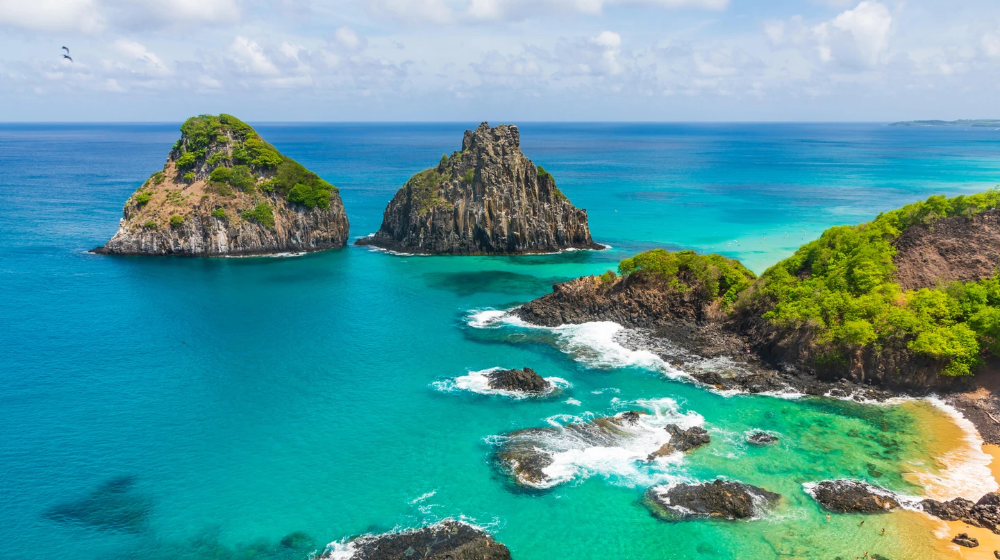

Brazil is the largest country in South America in terms of land area and
one of the most populous as well. Portuguese is the offical language
spoken there.
It has an enourmous cultural,ethnic, religious diversity. The country is
very rich in natural aspects, such as vegetation, climate, fauna and
flora.
I could share countless images of stunning places. There a lot to do there! I love going to the beaches and this special one is called Fernando de Noronha, located in Pernambuco.
Now, I'm living in Calgay, Canada. And I love being close to the nature.
Here in Alberta, there are a splendid places to go, such as Moraine
Lake, for now, my favourite lake.
However, the place I'm going the most is
Bow Valley College, as I'm enrolled in a Software Development course.
The Emerald Lake, 🇨🇦 in British Columbia 🇨🇦, is the favourite place I have visit.